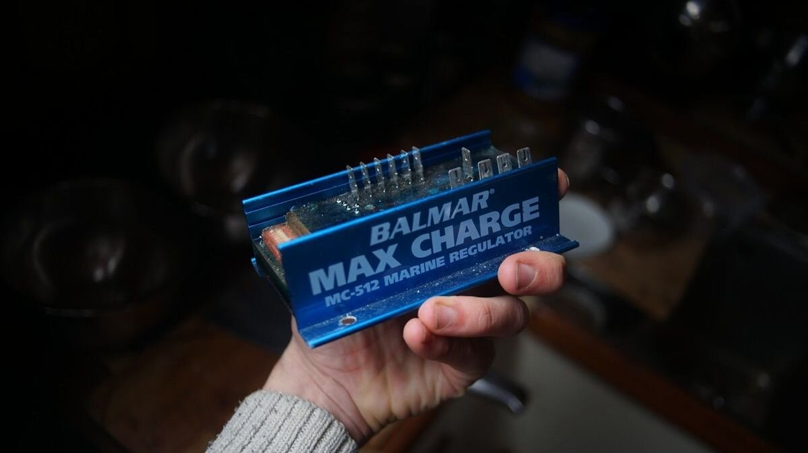
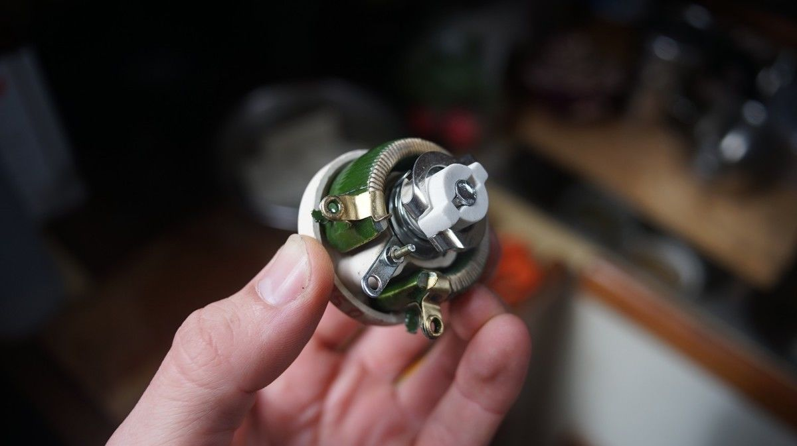
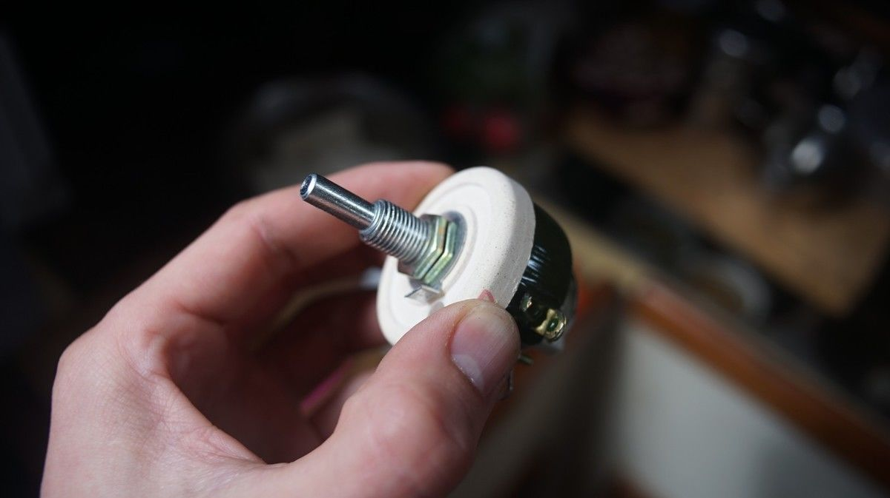
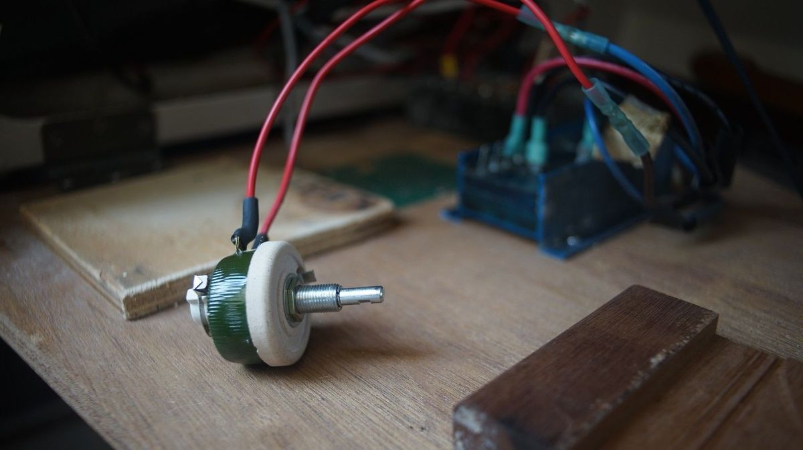
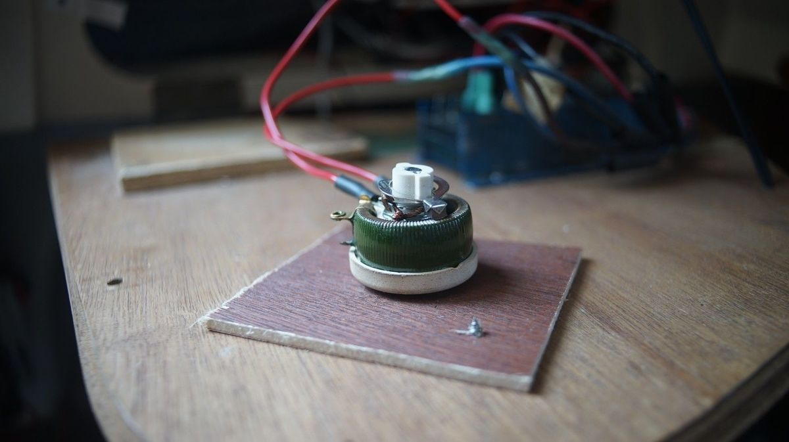
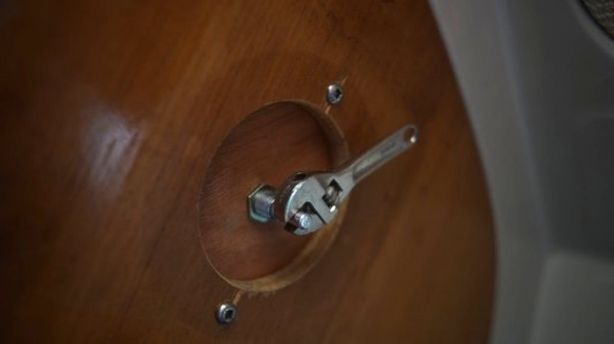

potentiometer
22.05.03
Victoria, Canada
Last year when we switched engines (see engine rebuild), the alternator was incorrectly wired back in. When we reconnected them correctly, the alternator began overcharging the batteries (up to 16 volts).
We inspected connections, checked our batteries, and did a voltage regulator test as outlined in our regulator's manual, and did not get the expected readings.
We spent a long time testing it, making changes, but could not figure out what was happening and concluded that maybe, sadly, that the regulator was faulty.
When searching for a replacement, we saw that getting the newer equivalent of our Balmar MC-512 regulator would cost us... 600$. We could not believe the price tag. The Balmar is a good device, and this company makes good products, but if it fails it is difficult to fix because the circuit board is completely enclosed in resin.
We are always on the lookout for simpler alternatives, and when speaking to our friend Peter about our recent dilemma, he suggested we try a potentiometer. The same things used to control electrical devices such as volume controls on audio equipment.
 An important detail to note, is that regulators and potentiometers are not the same thing.
A voltage regulator, like our Balmar MC-512, is a smart device that responds to changes in load and makes automatic corrections of output voltage. A potentiometer is a variable resistor, it will allow us to set a voltage ratio ourselves. If we turn the knob of the potentiometer, the load increases and the output voltage changes. If it's all the way off, no voltage.
We got our hands on an off-the-shelf, 25W 50 OHM potentiometer. Because it is rated for higher power, it is built with a resistance wire wound around a semicircular ceramic insulator.
The upside of this device is that it is inexpensive, and easy enough to maintain/replace, but it does mean that we need to adjust the ouput by hand.
There are 3 stages of charging a battery: bulk, absorption, and float stage.
- Bulk stage. When the battery is 80% discharged. Higher voltage input is required at this stage.
- Absorption. When the battery is 80% charged. The battery will maintain a lower voltage and the amps will decrease as the battery state of charge will increase.
- Float. When the battery is fully-charged. The voltage will decrease, and the amps will be 0 or 1.
| Battery Discharge Stage | Voltage Required |
| 80% | 14-15V |
| 50% | 13-14V |
| 20% | 12-13V |
| 10% | 11.5-12V |
Balmar regulators go through an 8-stage process:
It starts with a delay, giving the engine a chance to warm up before adding load. Then, there's a soft ramp up, until it reaches bulk charging. Lead acid batteries will receive an output ranging from 14.1V to 14.6V at this stage. Bulk charging is preset at 18 minutes. After the bulk time period, it calculates the state of charging and will maintain bulk charging until all criteria are met, then ramp down to absorption voltage. Absorption voltage is typically two tenths of a volt below bulk target voltage. Absorption time is set at 18 minutes. Then time for more calculation, until all criteria are met. Then, comes float voltage. Float voltage is a volt below bulk target voltage, it allows the alternator to drive current into fully-charged batteries to replace any energy used while underway (set at 18 minutes). Then, more calculation. If the alternator can't maintain battery voltage, it will return to absorption voltage.
Of course, we cannot replicate this exactly by hand, but we'll do tests and hope for the best. We'll use these numbers as a baseline, for when to lower the charge. On start up we can turn the knob of our potentiometer all the way down so there is no voltage output, then gradually ramp up tp 14.1-14.6V. The time spent at each stage will depend on how deeply the batteries are discharged, and may require more voltage if there is a significant draw (running radar, for example).
When underway, we rarely leave the alternator running (our setup used to have an on/off switch) for long because we have solar. On grey days though, it will be nice to know that we can pump juice into our batteries.
We used the space from our old alternator switch for the potentiometer.
The device doesn't come with a knob, so we'll have to make one.
In the meantime, we're using a very cute mini adjustable wrench that we forgot we had.
